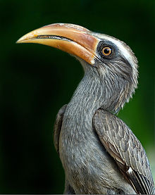
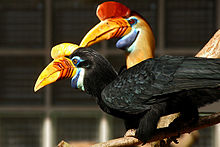
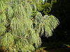
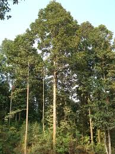

State Animal:
Mithun


Mithun is a large domestic bovine distributed in Northeast India
State Bird:
Hornbill


The hornbills (Bucerotidae) are a family of bird found in tropical and subtropical Africa, Asia and Melanesia. They are characterized by a long, down-curved bill which is frequently brightly colored and sometimes has a casque on the upper mandible.
State Tree:
Hollong


Dipterocarpus retusus, commonly known as hollong, is a large tree and perhaps the best known species in the genus Dipterocarpus.